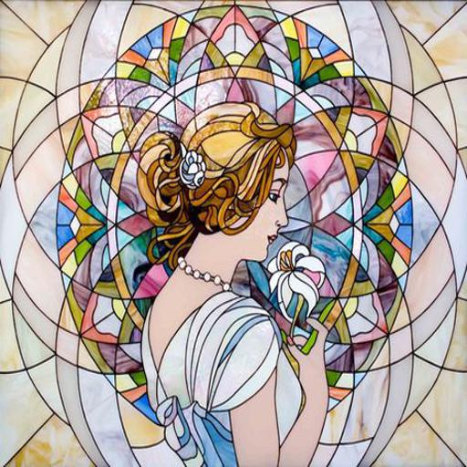
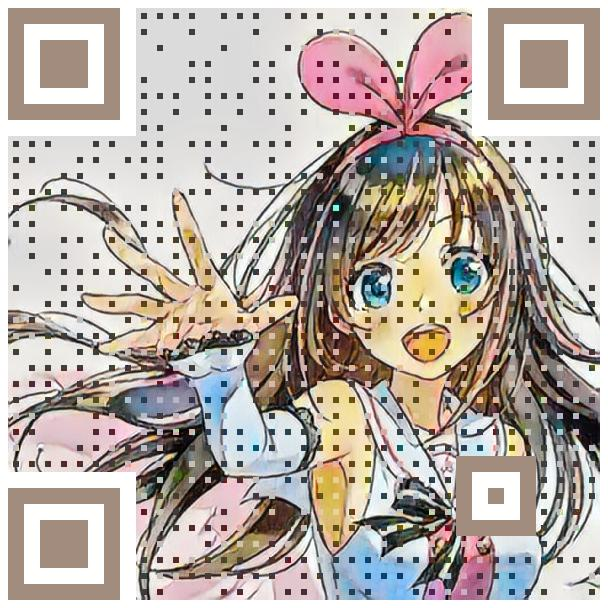
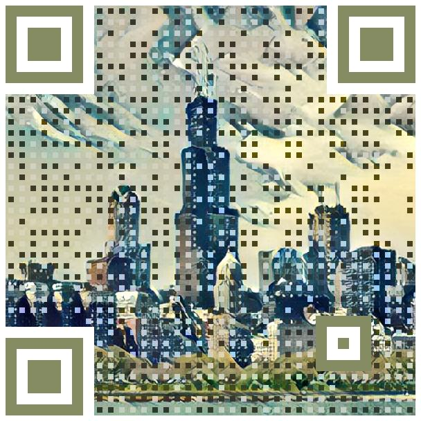
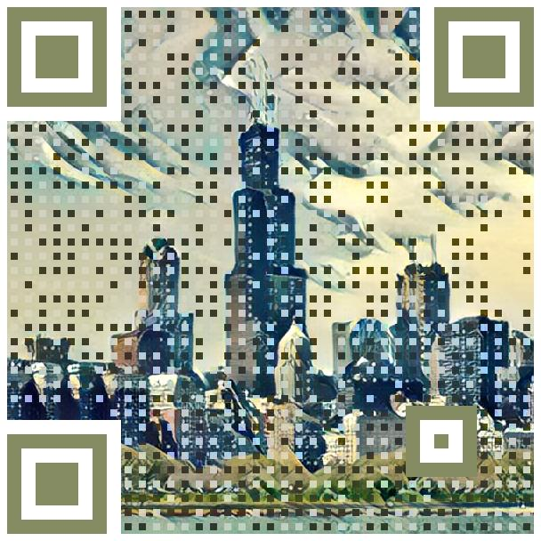
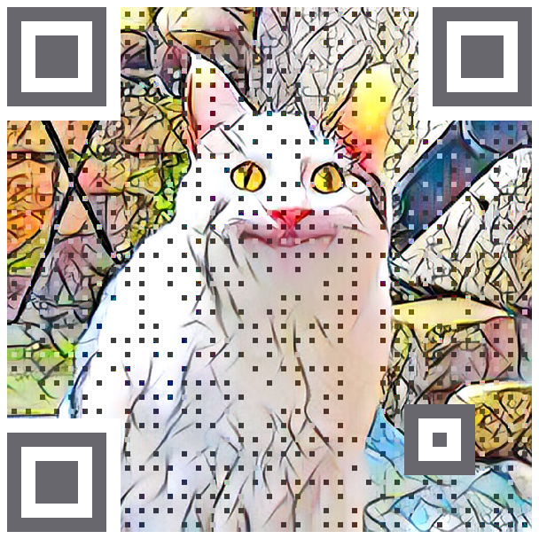
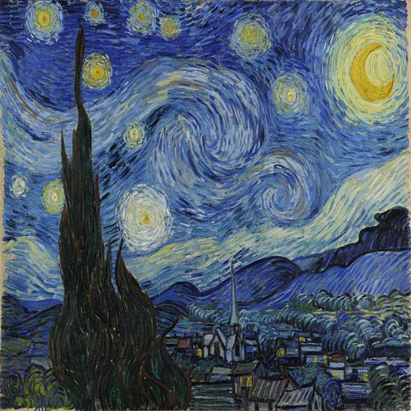
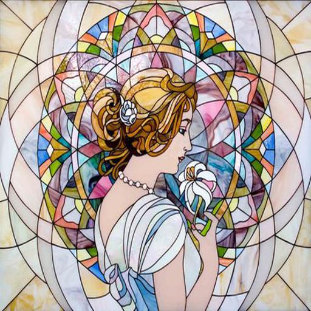
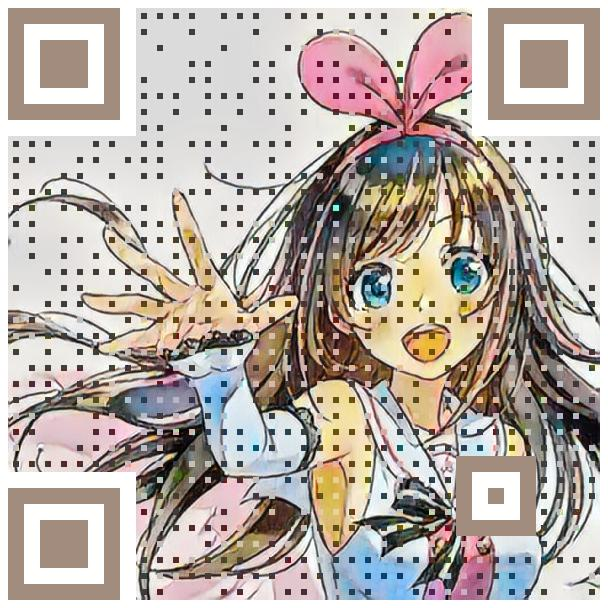
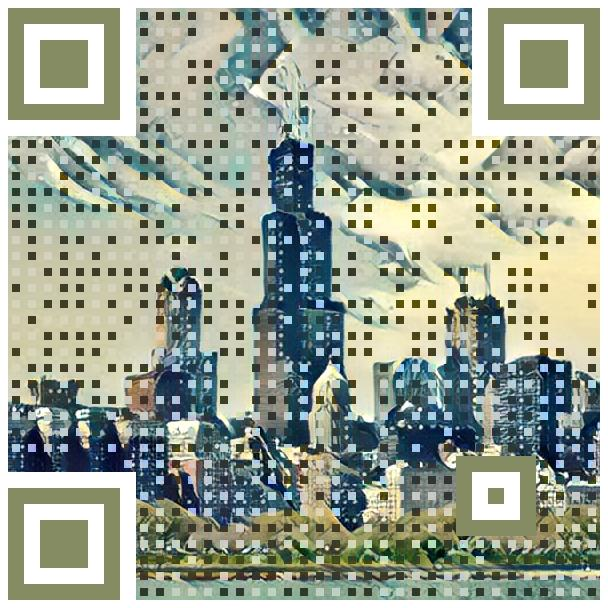

成果
 
 



快速回應圖碼在智慧型手機的普及下，已經成為最為廣泛使用的二維條碼。然而其黑白二色的外觀在視覺上略為單調，也無法讓人直接了解掃描後的內容，所以不同的圖碼美化技術隨之而生，但現今技術仍在生成結果或生成效率上有其侷限。此外，大多數儲存快速回應圖碼的圖像格式為點陣格式，若欲將美化的快速回應圖碼進行印刷或大尺寸輸出，容易因解析度的限制，產生鋸齒狀的失真。本論文基於影像疊合與向量化技術，以向量格式製作背景圖像與前景之快速回應圖碼後進行疊合，生成藝術快速回應圖碼，使其能不受解析度限制任意進行縮放。同時嘗試神經風格轉換，以生成具風格之藝術快速回應圖碼。
 
